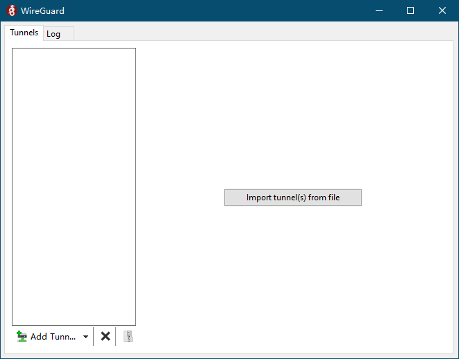

wireguard简介
wireguard是一个新的高性能VPN，它设计精巧，核心代码仅四千多行，被Linux之父Linus Torvalds称为“艺术品”。要知道林纳斯大神平时都是喷人的，而能得到他的赞美，可见wireguard有多么优秀了。而且wireguard相对于OpenVPN来说，配置起来更加简单，运行速度也更快。
安装wireguard
wireguard这么好，那么怎么用呢？可惜目前用起来还不太方便，因为它是依赖于内核的，而目前很多系统的内核都比较旧。不过好在wireguard已经被合并到Linux 5.6内核中了，一段时间以后，我们就可以用上原生的wireguard了。
以目前比较流行的Ubuntu 18.04 长期支持版为例，安装wireguard的方法如下。
$ sudo add-apt-repository ppa:wireguard/wireguard
$ sudo apt-get update
$ sudo apt-get install wireguard
如果在执行上面的命令时遇到了找不到add-apt-repository命令的问题，需要先安装下面的包，然后在执行上面的命令。
$ sudo apt-get install software-properties-common
安装完毕之后，在命令行中应该就可以使用wg等命令了。
配置wireguard
wireguard配置起来算是比较简单，下面我简单写了一个带了注释的安装脚本，相信大家应该很简单就可以看懂。因为密钥都是随机生成的，所以wireguard可以说是非常安全。下面的配置唯一需要注意的就是端口号写死了54321，可以随便修改为另外一个未使用的端口号。
将脚本复制为wg.sh，然后运行bash wg.sh即可，注意脚本中最后几步要将配置文件复制到/etc/wireguard/中，需要输入sudo用户密码。运行成功之后，会显示客户端配置文件的内容，将其保存为client.conf文件即可。
#! /bin/bash
config_dir="$HOME/.wireguard/"
mkdir -p "$config_dir"
cd "$config_dir" || {
echo 切换目录失败，程序退出
exit
}
# 生成两对密钥，分别用作服务器和客户端使用
wg genkey | tee pri1 | wg pubkey >pub1
wg genkey | tee pri2 | wg pubkey >pub2
# 设置密钥访问权限
chmod 600 pri1
chmod 600 pri2
interface=$(ip -o -4 route show to default | awk '{print $5}')
ip=$(ip -4 addr show "$interface" | grep -oP '(?<=inet\s)\d+(\.\d+){3}')
# 生成服务端配置文件
cat >wg0.conf <<EOL
[Interface]
PrivateKey = $(cat pri1)
Address = 10.10.10.1
ListenPort = 54321
PostUp = iptables -A FORWARD -i wg0 -j ACCEPT; iptables -A FORWARD -o wg0 -j ACCEPT; iptables -t nat -A POSTROUTING -o $interface -j MASQUERADE
PostDown = iptables -D FORWARD -i wg0 -j ACCEPT; iptables -D FORWARD -o wg0 -j ACCEPT; iptables -t nat -D POSTROUTING -o $interface -j MASQUERADE
[Peer]
PublicKey = $(cat pub2)
AllowedIPs = 10.10.10.2/32
EOL
# 生成客户端配置文件
cat >client.conf <<EOL
[Interface]
PrivateKey = $(cat pri2)
Address = 10.10.10.2
DNS = 8.8.8.8
[Peer]
PublicKey = $(cat pub1)
Endpoint = $ip:54321
AllowedIPs = 0.0.0.0/0
EOL
# 复制配置文件并启动
sudo cp wg0.conf /etc/wireguard/ || {
echo 复制失败,请检查/etc/wireguard目录或wg0.conf是否已经存在
exit
}
sudo wg-quick up wg0 || {
echo 启动wireguard失败，请检查/etc/wireguard/wg0.conf是否存在错误
exit
}
# 显示客户端配置文件
echo "----------以下是客户端配置文件，请保存并在客户端中使用----------"
cat client.conf
使用wireguard
有了上面生成的客户端配置文件，就可以非常方便的运行wireguard。首先从官网下载windows客户端，安装之后会显示下面的窗口。

点击左下角的Add Tunnel按钮，然后选择配置文件，就可以自动配置好客户端了。然后点击右边的Activate按钮，就启动了wireguard了。它是VPN，所以会接管整个系统的流量。这在有些时候非常方便。
如果是手机端的话，要稍微麻烦一点。这里我建议使用Python将配置文件转换成二维码扫描，然后手机扫二维码图片即可连接。注意下面的命令不要用Powershell执行，因为Powershell的管道和其他shell不同，可以使用cmd或者Git Bash等执行。
pip install qrcode[pil]
cat client.conf|qr client.png
其他资源
这里推荐一下某位大佬编写的一键安装脚本，支持一键安装、卸载、更新、自动随机化配置wireguard。脚本有700多行，涵盖了各种功能，看完之后，我对Shell编程又有了新的认识。可以说脚本本身就是一个很好的学习资源，大家可以当做参考。